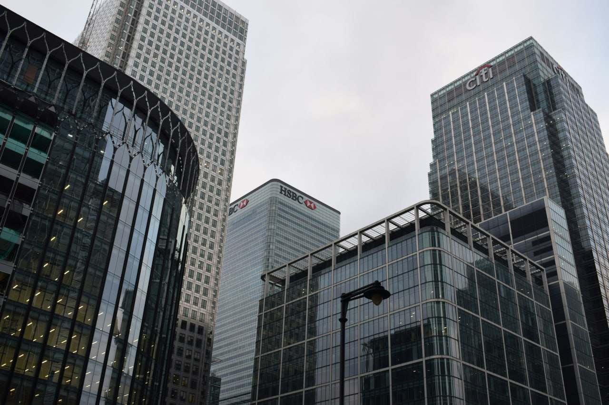

International incorporation and business consultancy.
Singapore offers a fast and efficient company registration process for foreigners, with strong legal protections, transparent regulations, and full foreign ownership allowed in most cases. It is a globally trusted business hub with a stable economy, low corporate tax rates, and excellent access to international banking and markets.
Hong Kong offers a fast and business-friendly company registration process with low taxes, international banking access, and full foreign ownership. It is one of the world’s leading jurisdictions for international trade, startups, and global business operations. Establish your Hong Kong company with a streamlined registration process, international credibility, and access to one of Asia’s most dynamic financial centers.
Great Britain offers a robust legal framework, a stable economy, and access to the European market. It is a popular destination for international businesses seeking to establish a presence in the UK. Our services include company incorporation, compliance support, and ongoing business advisory services to ensure your operations run smoothly.
We can provide nominee director services in Singapore to help your foreign-owned company meet the local statutory requirement for incorporation. This ensures smooth compliance while you retain full operational control and ownership of your business.
We provide professional trust solutions designed to support asset protection, succession planning, corporate structuring, and international business operations.
We can assist with corporate bank account opening by guiding you through documentation, compliance requirements, and introducing suitable banking options for your business profile. Our team helps streamline the onboarding process and improve your chances of successful account approval with local and international banks.

We provide virtual office and registered address services in Singapore, giving your company a professional local business presence that meets statutory incorporation requirements. This includes a compliant registered address for official correspondence, helping you maintain credibility and regulatory compliance while operating your business remotely.